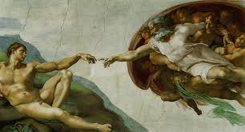

文藝復興盛期
或許可以將文藝復興盛期理解成一個天才輩出的時代，他們展現的藝術風格將文藝復興推入一個黃金時期。
一、米開朗基羅
米開朗基羅﹝Mi-chelangelo Buonarroti﹞，一位傲氣與才氣兼具的佛羅倫斯藝術家，「大衛像」是佛羅倫斯政府委託他的一項巨大工程，當年大衛將巨人歌利亞打倒時還只是個小孩，他卻將大衛雕塑成一個肌肉發達的成熟樣貌，右手拿著石頭，左手舉著發彈器，身軀向後傾斜，呈現出蓄勢待發的模樣。米開朗基羅十分擅長雕塑男性裸體，更曾為了更了解人體構造而解剖遺體，他將「大衛像」雕塑得栩栩如生，同時也將大衛的冷靜沉著詮釋得相當好。西斯汀教堂的天花板亦是米開朗基羅的一項偉大創作，實際上當年他非常堅定的拒絕接下這份工作，並清楚地向教皇表明自己是雕刻家，不是一名畫家，他也曾暗自懷疑這是個陷害他的伎倆，無奈的是教皇始終不肯收回命令，米開朗基羅只好接下了這份艱鉅的任務，他將自己關在教堂裡，成天躺在高架上引頸作畫，花了四年半的時間完成了這件令人驚嘆的畫作，其中「最後的審判」表達出對當時政局動盪的惶恐、不安。
The last judgement